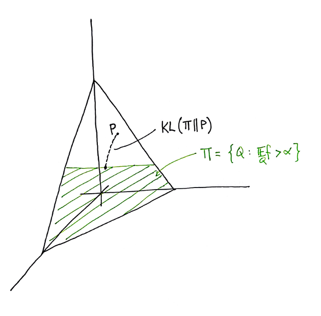

Information Theory and Statistics, a tutorial (Chapter 2)
Csiszár, I, and Shields, P.C. Information Theory and Statistics: A Tutorial
- prev chapter: Preliminaries
- this chapter: Large deviations, hypothesis testing
- next chapter: I-projections
Summary
In the following, we can study large deviations combinatorially. We consider the space of all possible finite samples, their sizes, and relationship with entropy and KL-divergence.
Large deviations via types
Let \(A\) be a finite alphabet of size \(t\).
- the type of a sequence \(x_1^n \in A^n\) is its empirical distribution \(P\), \[\begin{equation*} P(a) = \frac{\# \{i : x_i = a\}}{n} \end{equation*}\]
- the type class of the \(n\)-type \(P\), \(T_P^n\), is the collection of all sequences of type \(P\).
- a distribution \(P\) is an \(n\)-type if it is the empirical distribution of some \(x_1^n \in A^n\).
- let \(\mathcal{P}_n\) be the collection of all \(n\)-types.
We can list a few facts about this set of objects:
- by the stars-and-bars theorem, the number of \(n\)-types is \[\begin{equation*} |\mathcal{P}_n| = \binom{n + t - 1}{t - 1}. \end{equation*}\]
- let \(P\) be an \(n\)-type, \(k_i = n\cdot p_i\) be the number each letter \(i\) appears. The size of \(T_P^n\) is \[\begin{equation*} \left|T_P^n\right| = \frac{n!}{k_1! \dotsm k_t!}. \end{equation*}\]
- let \(P \in \mathcal{P}_n\). Denote by \(k_i = n \cdot p_i\) be the expected number of times that each letter is seen. Suppose we draw \(x_1^n\) from the distribution \(P^n\). Let’s say that \(x_1^n\) has type \(Q\), where \(Q \in \mathcal{P}_n\) amd each letter \(i\) appears \(j_i\) times in \(x_1^n\). The probability of seeing \(x_1^n\) is: \[\begin{equation*} P^n(x_1^n) = \frac{1}{n^n} \cdot k_1^{j_1} \dotsm k_t^{j_t}. \end{equation*}\] If \(Q = P\), then the probability of observing \(x_1^n\) is: \[\begin{equation} \label{entropy} P^n(x_1^n) = p_1^{k_1} \dotsm p_t^{k_t} = p_1^{n p_1} \dotsm p_t^{n p_t} = 2^{-n \cdot H(P)}. \end{equation}\] In general, the probability that a sample drawn from \(P^n\) has type \(Q\) is: \[\begin{equation*} P^n(T_Q^n) = \frac{1}{n^n} \cdot\frac{n!}{j_1! \dotsm j_t!}k_1^{j_1} \dotsm k_t^{j_t}. \end{equation*}\] The following lemma shows that \(P(T_Q^n)\) is maximized when \(Q = P\):
Lemma 1. Let \(j_1,\dotsc, j_t\) be nonnegative integers with sum \(j_1 + \dotsm + j_t = n\). The following is maximized when \(j_i = k_i\) for all \(1 \leq i \leq t\) \[\begin{equation*} \frac{n!}{j_1! \dotsm j_t!} k_1^{j_1} \dotsm k_t^{j_t}. \end{equation*}\]
Proof. If \(j_r > k_r\) and \(j_s < k_s\), then we can increase the overall value by decreasing \(j_r\) by 1 and increasing \(j_s\) by 1. This amounts to multiplying by: \[\begin{equation*} \frac{j_r}{k_r} \frac{k_{s+1}}{j_s + 1} \geq \frac{j_r}{k_r} > 1. \end{equation*}\]This lets us relate \(|T_P^n|\) to the entropy \(H(P)\), through the equation: \(\sum_{Q \in \mathcal{P}_n} P^n(T_Q^n) = 1\) along with the previous lemma which shows that the largest term in the sum is: \[\begin{equation*} P^n(T_P^n) = |T_P^n| \cdot 2^{- n \cdot H(P)}. \end{equation*}\] Because there are \(\binom{n + t - 1}{t - 1}\) terms in the sum, we obtain:
Lemma 2. For any \(n\)-type \(P\), \[\begin{equation*} \binom{n + t - 1}{t - 1}^{-1} 2^{n\cdot H(P)} \leq \left|T_P^n\right| \leq 2^{n\cdot H(P)}. \end{equation*}\]
Equation \(\ref{entropy}\) related entropy to the probability of seeing a sequence \(x_1^n\) of type \(P\) when drawn from \(P^n\). Now, suppose that \(P\) is any distribution, and we again draw a sequence \(x_1^n\) of type \(Q\). Let’s compare the probabilities that \(x_1^n\) was drawn from \(P^n\) versus \(Q^n\): \[\begin{equation}\label{kl-div} \frac{P^n(x_1^n)}{Q^n(x_1^n)} = \prod_{i=1}^t \frac{p_i^{n \cdot q_i}}{q_i^{n \cdot q_i}} = 2^{- n \cdot \mathrm{KL}(Q||P)}. \end{equation}\] It quickly follows that:
Lemma 3. For any distribution \(P\), \(n\)-type \(Q\), and any \(x_1^n \in T_Q^n\), \[\begin{equation*} \binom{n + t - 1}{t - 1}^{-1} 2^{-n \cdot \mathrm{KL}(Q||P)} \leq P^n(T_Q^n) \leq 2^{-n \cdot \mathrm{KL}(Q||P)}. \end{equation*}\]
This upper bound lets us show that the empirical distribution converges to \(P\) in KL divergence as \(n\) goes to infinity:
Corollary 4. Let \(\hat{P}_n\) denote the empirical distribution of a random sample of size \(n\) drawn from \(P\). Then for all \(\delta > 0\): \[\begin{equation*} \mathrm{Pr}\big[\mathrm{KL}(\hat{P}_n || P) \geq \delta\big] \leq \binom{n + t - 1}{t - 1} 2^{-n \delta} \end{equation*}\]
Proof. The probability that the empirical distribution \(\hat{P}_n\) is at least \(\delta\) away from \(P\) in KL-divergence is: \[\begin{equation*} \mathrm{Pr}\big[\mathrm{KL}(\hat{P}_n || P) \geq \delta\big] = \sum_{\substack{Q \in \mathcal{P}_n \\ \mathrm{KL}(Q||P) \geq \delta}} P^n(T_Q^n) \leq |\mathcal{P}_n|\cdot 2^{-n \delta}. \end{equation*}\] Note that \(|\mathcal{P}_n| \cdot 2^{-n \delta} = O\left(2^{-n \delta + t \log n} \right)\).This corollary combined with the Borel-Cantelli lemma implies that \(\hat{P}_n\) converges to \(P\) with probability 1 as \(n \to \infty\), a fact we also know from the law of large numbers.
The following theorem is a special case of Sanov’s theorem over a finite space. It shows that if \(\Pi\) is a collection of distributions bounded away from \(P\) in KL-divergence, then the probability that \(\hat{P}_n\) is contained in \(\Pi\) is exponentially small. To state this formally, we define: \[\mathrm{KL}(\Pi || P) := \inf_{Q \in \Pi} \mathrm{KL}(Q || P).\]
Theorem 5 (Sanov’s theorem). Let \(\Pi\) be a set of distributions such that its closure is equal to the closure of its interior: \(\mathrm{cl}(\Pi) = \mathrm{cl}(\mathrm{int}(\Pi))\). Let \(\hat{P}_n\) be the empirical distribution of a random sample from \(P^n\). Then: \[\begin{equation*} - \frac{1}{n} \log \mathrm{Pr}\big[\hat{P}_n \in \mathrm{cl}(\Pi)\big] \to \mathrm{KL}(\Pi||P). \end{equation*}\]
Proof. Notice that the set \(\bigcup \mathcal{P}_n\) is dense in the probability simplex \(\Delta^{t-1}\) (aside: each of the \(\mathcal{P}_n\) is a lattice on the simplex). Let \(\Pi_n = \mathrm{cl}(\Pi) \cap \mathcal{P}_n\). Then, we have: \[\begin{equation*} \mathrm{Pr}\big[\hat{P}_n \in \Pi_n\big] = P^n\left(\bigcup_{Q \in \Pi_n} T_Q^n\right) = \sum_{Q \in \Pi_n} P^n(T_Q^n). \end{equation*}\] Lemma 3 implies: \[\begin{equation*} \binom{n + t - 1}{t - 1}^{-1} 2^{-n \cdot \mathrm{KL}(\Pi_n || P)} \leq \mathrm{Pr}\big[\hat{P}_n \in \Pi_n\big] \leq \binom{n + t - 1}{t - 1} 2^{-n \cdot \mathrm{KL}(\Pi_n || P)}. \end{equation*}\] Taking logs and multiplying through by \(- \frac{1}{n}\), we obtain: \[\begin{equation*} \mathrm{KL}(\Pi_n||P) - \frac{t}{n} \log n \leq - \frac{1}{n} \mathrm{Pr}\big[\hat{P}_n \in \Pi_n\big] \leq \mathrm{KL}(\Pi_n ||P) + \frac{t}{n} \log n. \end{equation*}\] As \(\mathrm{KL}(Q||P)\) is continuous in \(Q\), this shows that \(\mathrm{KL}(\Pi_n || P)\) becomes arbitrarily close to \(\mathrm{KL}(\Pi||P)\) as \(n\) goes to infinity.Sanov’s theorem lets us obtain large-deviation bounds. For example, consider the collection \(\mathcal{F}\) of functions \(f : A \to \mathbb{R}\). Let \(P\) be any probability distribution. Then, the map \(\mathbb{E}_P\) is dual to \(f \in \mathcal{F}\), where: \[\begin{equation*} \mathbb{E}_P f := \sum_{i \in A} p_i \cdot f(i). \end{equation*}\] The collection \(\Pi\) of all probability distributions \(Q\) such that \(\mathbb{E}_Q f > \alpha\) corresponds to the intersection of the probability simplex and a halfspace. The probability that the empirical estimate \(\mathbb{E}_{\hat{P}_n} f \geq \alpha\) goes exponentially quickly to zero: \[\begin{equation*} \mathrm{Pr}\big[\mathbb{E}_{\hat{P}_n} f \geq \alpha \big] \to 2^{-n\cdot \mathrm{KL}(\Pi||P)}, \end{equation*}\] if \(\Pi\) is bounded away from \(P\) in KL-divergence.

Figure 1. \(P\) is a probability distribution on the probability simplex. The function \(f\) splits the simplex into two pieces; the green section correspond to those \(Q\) such that \(\mathbb{E}_Q f > \alpha\). The path extending out from \(P\) is an exponential family of distributions \(P_t\) meeting \(\mathrm{cl}(\Pi)\) at \(Q^*\), defined below.In this example, consider the exponential family of distributions, parametrized by \(t\): \[\begin{equation*} P_t(a) = \frac{1}{Z_t} P(a) \cdot 2^{t f(a)}, \end{equation*}\] where \(Z_t\) is a normalization factor. Then, \(P_0 = P\) and also: \[\begin{equation*} \lim_{t \to \infty} \mathbb{E}_{P_t} f = \max_a f(a). \end{equation*}\] It follows by continuity over \(t\) that if \(\mathbb{E}_Pf < \alpha\) but \(\max_a f(a) > \alpha\), there must exist some \(t^*\) such that when \(Q^* = P_{t^*}\), then \(\mathbb{E}_{Q^*} f = \alpha\).
Discussion
- A central object we should understand is the following polynomial: \[(X_1 + \dotsm + X_t)^n = \sum \frac{n!}{j_1! \dotsm j_t!} X_1^{j_1} \dotsm X_t^{j_t}.\]
- We wish to study a probability distribution \(P \in \Delta^{t-1}\) over a space \(A\). To do this, we consider finite i.i.d. draws from \(A\). Because of the i.i.d. assumption, we can consider the symmetric tensor product: \[\begin{equation*} (X_1 + \dotsm + X_t)^{\odot n} = \sum \frac{n!}{j_1! \dotsm j_t!} X_1^{\odot j_1} \odot \dotsm \odot X_t^{\odot j_t}. \end{equation*}\] This reduces the space we need to consider from the size \(t^n\) to \(\binom{n + t - 1}{t - 1}\). In particular, we can take this space as a lattice \(\mathcal{P}_n\) on the probability simplex. And because \(\bigcup \mathcal{P}_n\) is dense in \(\Delta^{t-1}\), \(\mathrm{KL}(Q||P)\) is continuous in \(Q\), and \[\begin{equation*} \frac{P^n(x_1^n)}{Q^n(x_1^n)} = 2^{-n \mathrm{KL}(Q||P)} \end{equation*}\] for any \(Q\) an \(n\)-type and \(x_1^n \in T_Q^n\), we are ensured that as \(n\) grows to infinity, \(Q\) becomes a good approximation to \(P\), and we can study \(Q\) from a sequence \(x_1^n\). Performing the same sort of reductions seems much more difficult when we lose the i.i.d. assumption. Is it still sensible to look at \(\bigcup \mathcal{P}_n \subset \Delta^{t-1}\)?